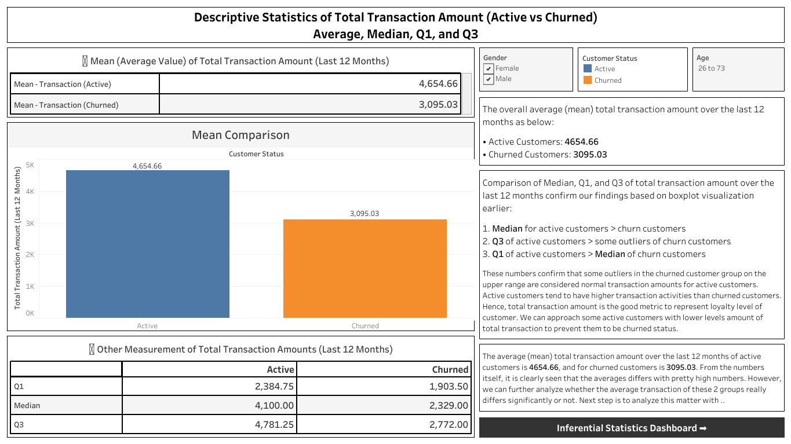
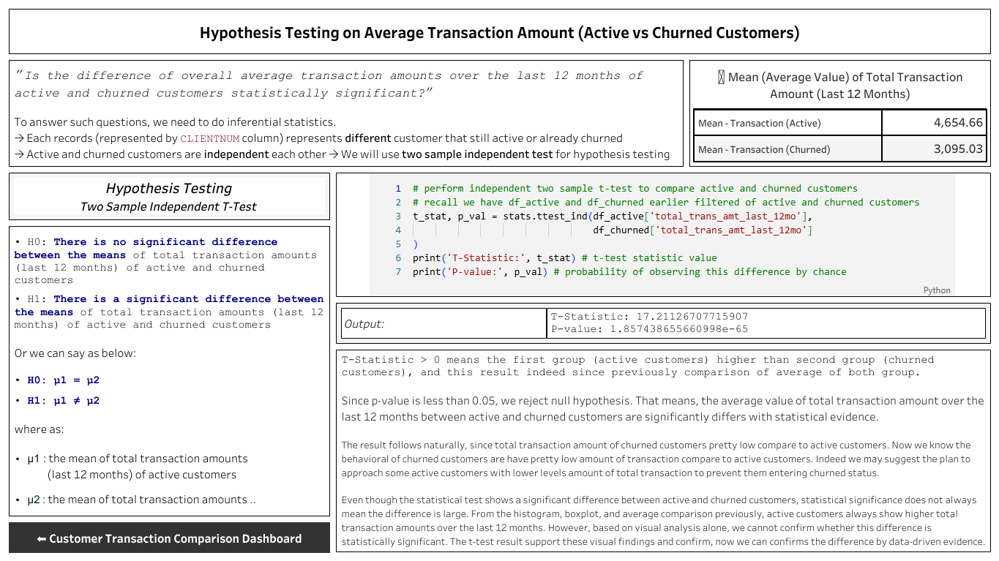

Active vs Churned Customer Behavior Analysis
Customer churn is a critical problem in the banking industry. Understanding behavioral differences between active and churned customers can help improve retention strategies.
This project analyzes transaction behavior using exploratory data analysis, descriptive statistics, and inferential statistical testing to identify meaningful differences.
Interactive dashboard comparing transaction behavior between active and churned customers.

Descriptive statistics comparison between active and churned customers.

Hypothesis testing results confirming statistical significance.